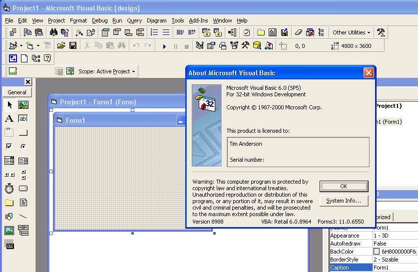
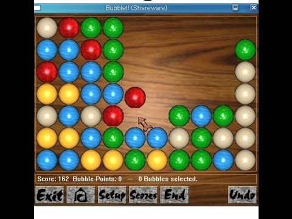
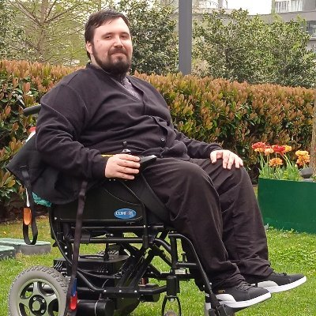

Mehmet's Story
Nostalgia and Me
Born in 1994, I was quite curious about the world. You know all the Kevin Mitnick movies and tech companies, blooming internet and its "Spartan Programmer" culture. Everybody was very hyped about that huge box(we didn't know it was huge back then), and it was a gate to intellectual journey, a love of knowledge maybe :)
Anyways, when I read my first binary at 6 years old, inside the definition of the word "computer" in an encylopedia, it took my attention. But toys were more interesting so I created robots and stuff for 2 more years. You know, legos and stuff. One time I tried make a motorized pen with putting a pen inside a coil, and plummeting the coil inside the socket. Entire apartment's electricy was gone, it's good that I didn't head on the way of electricy as well :)
Adversity
Fast forward 2 years, at the age of 8, I started to learn HTML. And afterwards CSS. I was hooked. First thing I'd done on computer, changing the title of the Internet Explorer, disrupted me so to say. I called my brother and told him: "You won't believe me, I changed the thing, you know, the text at the top of Internet Explorer, it's called title!" That moment the machine started, the never-ending-curiosity-and-hunger-for-knowledge machine, since 2002.
Machine didn't run in isolation contrary to many technologies we have now :) As a person with muscular dystrophy who is now wheelchair bound, I didn't have an easy life. World is hard for a physically weak man, and I understood that to be at the same level with everyone, I need to create advantage because I am in disadvantage. 2 - 2 + 2 = 2, simple math. As you can see I have another very strong reason to hone my mind, and it happened so. My reading and programming sessions topped to 14 hours a day, for years. Maybe it was also an escape from the cruel world of a kid with a disability, who knows, as you can see I have my reasons. So...
Rise
Lots of adversities happened, but I never, well, almost never except 1 time left the programming. Every day, I got up and pressed any key. Every day, one day at a time, one key at two seconds(small fingers, short arm), for a long time, 20 years!
I had a chance to work at very innovative projects, or very mundane ones. I worked in 9 to 5s, looked after my brother. Everybody thought what I do is impressive but I never felt that, I felt it is ordinary. And I hope one day we will all feel it's ordinary.
20 years
Now designing products on every dimension including business, marketing, sales, programming and working for companies or diving into most technical areas. I am most talented at conjunction of languages and manifestations. That is probably due to: I learn a lot, I learned a lot, I'll learn a lot. Maybe I learn therefore I am? :) I made probably a few hundreds of projects in my lifetime, with a joy that's hard to find :) I love manipulating electrical current, mostly with human-readable programming languages.
Call to action
If you are more curious about me you can checkout my resume, LinkedIn profile or AngelList profile, and you can know me more. You can also email me at me@mehmetegemen.me. I am curious a lot about other SWE folks with disabilities so if you are one of them, please definitely say hi!